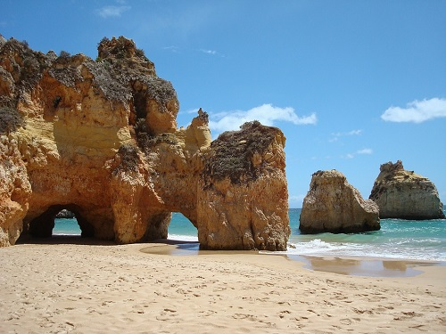
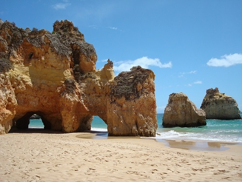

SOBRE EL PAÍS
Clima ameno, 3000 horas de sol al año y 850 km de espléndidas playas bañadas por el océano Atlántico hacen de Portugal el destino perfecto para todas las estaciones.En este país, que tiene las fronteras más antiguas de Europa, encontrará una gran diversidad de paisajes a corta distancia, muchas actividades de ocio y un patrimonio cultural único, donde la tradición y la modernidad se conjugan en armonía. La gastronomía, los buenos vinos y el pueblo hospitalario completan la oferta turística de calidad que encontrará. Situado en el extremo sudoeste de Europa y a pocas horas de cualquier capital europea, Portugal atrae a visitantes de todas partes del mundo. Descubra también el encanto de este país.
GEOGRAFIA
Portugal está situado en el extremo sudoeste de Europa e incluye los archipiélagos de Madeira y Azores en el Océano Atlántico. En el continente europeo, el territorio portugués ocupa una superficie de 88.889 km2 (con 218 Km. de anchura, 561 Km. de largura, 832 Km. de costa atlántica y 1.215 km de frontera terrestre con España). Situado en el Océano Atlántico, entre el continente europeo y el norteamericano, el archipiélago de las Azores tiene una superficie de 2.355 km2 y está constituido por nueve islas - San Miguel y Santa Maria en el Grupo Oriental, Terceira, Graciosa, San Jorge, Pico y Faial en el Grupo Central, y Flores y Corvo en el Grupo Occidental. Los enlaces con Portugal continental están asegurados por vía aérea en aproximadamente 2 horas de vuelo. El Archipiélago de Madeira, con una superficie de 741 km2, está situado en el Océano Atlántico a unos 500 Km. de la costa africana y a 1.000 Km. del continente europeo (1h30 de vuelo a Lisboa). Está constituido por las Islas de Madeira y Porto Santo y por las islas deshabitadas de Desertas y Selvagens (que son Áreas de Reserva Natural).
CLIMA
Portugal continental
El clima de Portugal varía significativamente de una región a otra, y está sometido a la influencia del relieve, la latitud y la proximidad al mar que proporciona inviernos suaves, especialmente en el Algarve. En las zonas de Porto e Norte y Centro de Portugal, especialmente en las zonas más cercanas a España, los inviernos son más fríos, aunque las temperaturas son moderadas en comparación con el resto de Europa. Se registran algunas nevadas, que son más frecuentes en la Serra da Estrela, donde se encuentra el punto más alto de Portugal continental (1991 m) y se dan las condiciones para la práctica del esquí. Los veranos son cálidos y secos, sobre todo en las regiones del interior (Nordeste trasmontano y el Alentejo), y en el litoral el calor es moderado por la influencia del mar. Durante el otoño se registran frecuentemente días soleados con temperaturas agradables, que cuando se producen al inicio de noviembre se conocen popularmente como "Verano de São Martinho" (Veranillo de San Martín), por la proximidad de la fecha en que se celebra ese Santo (11/11).
AzoresDebido a la influencia de la latitud y a la acción reguladora de la corriente del Golfo, el clima de las Azores se caracteriza por temperaturas agradables a lo largo de todo el año. Estas influencias afectan también a la temperatura del agua del mar que se mantiene muy agradable tanto en invierno como en verano, permitiendo la práctica de diferentes deportes náuticos.
MadeiraCon características subtropicales debido a su posición geográfica y al relieve montañoso, el clima del archipiélago de Madeira es excepcionalmente agradable, con temperaturas medias atmosféricas comprendidas entre los 24 ºC en verano y los 19 ºC en invierno. El agua del mar también se mantiene a una temperatura muy agradable a lo largo de todo el año debido a la influencia de la corriente cálida del Golfo, oscilando entre los 18 ºC (en invierno) y los 22 ºC (en verano).
POBLACIÓN
Portugal cuenta con una población de aproximadamente 10 millones de habitantes. Los mayores índices de densidad de población se registran en Lisboa, la capital del país, y en sus alrededores, donde viven aproximadamente 1,9 millones de personas. La segunda ciudad más grande de Portugal es Oporto, situada en el Norte del país. Por lo general, las localidades situadas en el litoral tienen una mayor densidad de población que las del interior del país.
RELIGIÓN
El pueblo portugués es mayoritariamente católico, pero la Constitución portuguesa garantiza la libertad religiosa, lo que se traduce en la presencia en Portugal de diversos cultos.
LENGUA
El portugués es un idioma de raíz latina que hablan casi 250 millones de personas de todos los continentes, ya que es el quinto idioma más utilizado en el mundo, y el tercero si contamos solo los idiomas europeos. Los países que hablan oficialmente portugués están repartidos por todo el mundo. De este modo, se habla portugués en África (Angola, Cabo Verde, Guinea Bissau, Mozambique y Santo Tomé y Príncipe), en América del Sur (en Brasil) y en Asia, en Timor Oriental, el país más joven del mundo, y el portugués es también la lengua oficial en la Regíon Administrativa Especial de Macau en China. En Portugal, una parte importante de los ciudadanos puede comunicarse fácilmente en inglés, francés y castellano.
MAPA
CÓMO LLEGAR A PORTUGAL
COCHE
Portugal posee una buena red viaria compuesta por Autopistas (AE), Itinerarios Principales (IP), Itinerarios Complementarios (IC), Carreteras nacionales (EN) y Carreteras Municipales.
Existen dos tipos de autopistas:
- Las tradicionales con cabinas de peajes, en las que el pago se realiza en metálico o mediante tarjeta bancaria. Estas autopistas también disponen de una vía verde, un sistema de tele-peaje que permite hacer el abono por débito bancario, y que se destina solamente a los poseedores de un identificador de vía verde, previamente adquirido en los respetivos puntos de venda - www.viaverde.pt.
- Y las de peajes exclusivamente electrónicos, en los que el sistema de cobro es exclusivamente electrónico, de forma que el paso de los vehículos se detecta a través de los sistemas existentes a la entrada de estas vías, que están identificadas con la referencia “Electronic toll only”. Para información sobre las carreteras afectadas y las formas de pago consulte http://www.portugaltolls.com o Easy Toll
En los aeropuertos, en las estaciones terminales de transporte internacional por ferrocarril y en las principales localidades existen servicios de alquiler de automóviles sin conductor. Los conductores discapacitados o aquellos que lo prefieran pueden alquilar vehículos con cambio automático o especialmente adaptados.
Para alquilar un coche es necesario:
- tener más de 21 o 25 años, en función de las condiciones de alquiler de cada empresa;
- presentar una identificación (documento de identidad para los ciudadanos de la U.E. o pasaporte válido para las demás nacionalidades);
- carné de conducir válido con más de un año de antigüedad.
AUTOBÚS
También se puede llegar a Portugal en autobús. Las empresas que realizan recorridos internacionales en territorio portugués son Eurolines (www.eurolines.fr) e Intercentro (ww.internorte.pt). Los servicios regulares de autobuses enlazan todas las ciudades, poblaciones y principales localidades de Portugal. Para obtener información detallada sobre recorridos, horarios y precios, consulte Rede Nacional de Expressos - www.rede-expressos.pt.
AVIÓN
La privilegiada situación geográfica de Portugal permite que sea punto de escala de muchas compañías aéreas extranjeras en los aeropuertos repartidos por todo el territorio nacional y situados en:
- Lisboa - Aeropuerto de la Portela - Tel.: 218 413 500
- Oporto - Aeropuerto Dr. Francisco Sá Carneiro - Tel.: 229 432 400
- Faro - Aeropuerto de Faro - Tel. 289 800 800
- Madeira - Funchal - Aeropuerto de Funchal - Tel: 291 520 700
- Azores - Ponta Delgada - Aeroporto João Paulo II - Tel: 296 205 400
- ANA - Aeroportos de Portugal, SA regula el funcionamiento de los aeropuertos en Portugal y ofrece información sobre salidas y llegadas en www.ana.pt, así como sobre los medios de transporte disponibles para llegar al centro de las ciudades más próximas.
- Las diferentes compañías aéreas portuguesas realizan enlaces regulares de ámbito nacional y internacional.
- TAP - Air Portugal (www.flytap.com) - la compañía "bandera" vuela regularmente a más de 75 destinos internacionales y realiza vuelos domésticos entre Lisboa, Oporto, Faro y las Regiones Autónomas de Madeira y de las Azores, así como entre las Islas de Madeira y de Porto Santo.
- SATA (www.sata.pt) vuelos regulares entre todas las islas de las Azores y de las Azores a Madeira y Portugal continental. SATA realiza también vuelos regulares a algunos aeropuertos internacionales.
- Aerovip (www.aerovip.pt) - Transporte aéreo regular entre Bragança, Vila Real, Viseu, Cascais y Portimão (Portugal continental).
INFORMACIÓN ÚTIL
Buscadores recomendados Booking Airbnb Tripadvisor
Salud: Los ciudadanos españoles y del resto de países europeos, tendrán asistencia gratuita en los hospitales públicos, siempre y cuando presenten la Tarjeta Sanitaria Europea. El resto de los turistas deben poseer un Seguro de viajero.
Dinero: La moneda oficial es el euro, por lo que no tendrás que realizar ningún cambio al llegar si vienes desde otro país europeo o de la zona euro.
Electricidad: El voltaje de la corriente eléctrica es de 220V a 50 Hz, y los enchufes son igual que en España y en el resto de Europa, de dos clavijas redondas.
GALERÍA DE IMÁGENES
 
